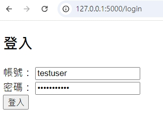
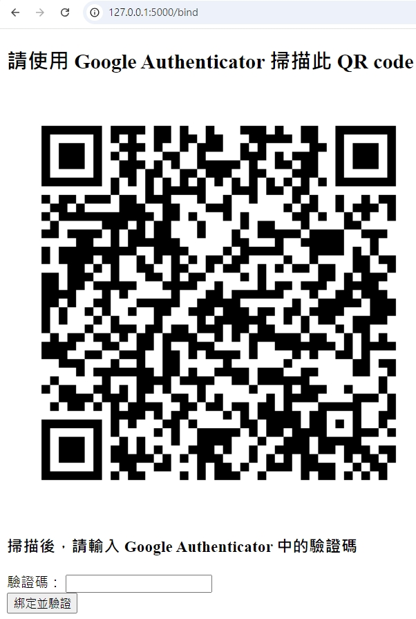
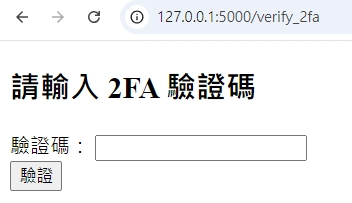
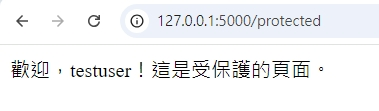

Flask && Google Authenticator 雙因素驗證(2FA) 練習
雙因素驗證（2FA）
雙因素驗證（2FA）是在登入帳號時增加的一層「保護鎖」。除了輸入密碼外，還需要提供一個「一次性驗證碼」。這樣即使有人偷了你的密碼，仍無法登入，因為他沒有該驗證碼。
Google Authenticator
Google Authenticator 是一個免費的手機應用程式，用來生成「一次性驗證碼」。當你需要登入時，Google Authenticator 會自動生成一個 6 位數的驗證碼，這個驗證碼每 30 秒會更新一次。
（同類應用還有 Authy、1Password Authenticator 和 Microsoft Authenticator 等等）
實作
演練 2FA 流程
會員登入後，判斷是否已經綁定 2FA：
- 已經綁定：提示使用者輸入驗證碼來完成登入。
- 未綁定：跳轉到綁定 2FA 的畫面，顯示一個 QR Code 讓使用者掃描並進行綁定。
綁定 2FA 的步驟：
- 顯示一個 QR Code 給使用者，這個 QR Code 包含系統為該使用者生成的密鑰。
- 使用者使用 Google Authenticator 掃描該 QR Code。
- 掃描後，Google Authenticator 會開始生成動態的 6 位數驗證碼。
- 請使用者輸入這個驗證碼以完成綁定。
驗證流程：
- 登入時，除了輸入密碼外，系統會要求使用者輸入由 Google Authenticator 生成的驗證碼來完成雙因素驗證。
Flask 2FA 實作練習
接下來我們將使用 Python Flask 實現這個 2FA 流程。以下是每個步驟的示例畫面：
登入畫面
綁定 2FA 畫面
輸入驗證碼
通過驗證畫面

程式碼
主要的加密與解密過程：
- 加密
# 產生隨機的 32 位 Base32 編碼字串，並暫存於 session
# 此密鑰將用於後續的 TOTP 驗證，確保每位用戶擁有唯一的密鑰
session['temp_2fa_secret'] = pyotp.random_base32()
# 創建一個 TOTP 物件
# TOTP（Time-based One-Time Password）根據上密鑰和當前時間生成動態驗證碼
totp = pyotp.TOTP(session['temp_2fa_secret'])
# 產生連結，用於生成 QR Code
uri = totp.provisioning_uri(name=session['username'], issuer_name='web_flask_test_2fa')
# 產生 QR Code，Google Authenticator 掃後加入
qr_img = qrcode.make(uri) - 解密
# 使用者登入後輸入驗證碼
# 表單 token 輸入 Google Authenticator 產生的 6 位數字
token = request.form['token']
# 驗證 token
if totp.verify(token):
flash('登入成功！')
else:
flash('驗證碼錯誤！')
補充
為什麼 pyotp 生成的結果能與 Google Authenticator 一致？
- 基於當前時間戳（每 30 秒為一個區間）。
- 使用共享的密鑰進行加密。
- 使用一致的加密算法（如 HMAC-SHA1）。
處理不再使用的密鑰或應用程式刪除？
- 用戶端身分驗證後可要求伺服器重新綁定。